Ragna Tale
RPG de ação isométrico, online, de heróis que mudam a cada evolução.
O jogo
Cace, evolua, mostre o que conquistou
Ragna Tale é um RPG de ação isométrico de fantasia, 100% online. Você escolhe uma tribo e uma linha de classe, caça com o grupo, encontra drops raros, cartas e chefes, e vê o herói se transformar a cada evolução: traje, arma e silhueta novos.
Este site mostra só o começo do mundo (até o nível 50). O resto fica para depois.
Pilares
O que guia o design
Caçar em grupo, drop raro, cartas, refino e chefes: sempre há um motivo para mais uma caçada.
O herói muda de aparência a cada traje, arma e evolução. Você vê e sente o que ganhou.
Tribos, linhas, ramos, elementos e cartas: dois personagens do mesmo nível não são iguais.
Mercado entre jogadores com ouro do jogo. Nada pago dá poder, drop ou XP.
Grupo, PvP por faixa de nível e mapas de risco são jogo normal; jogar junto compensa, sem excluir quem joga só.
Sem pay-to-win: nada que se compra dá poder, drop ou XP.
Tribos e classes
Três tribos, doze linhas de classe
A tribo define a cidade inicial; a linha, o jeito de lutar. O herói muda de visual a cada evolução; mais evoluções virão no futuro. Os retratos são conceitos de arte e podem mudar.
Vowborn Nascidos do Voto
Juramento ao sino: proteger a vila, a luz e quem não luta. A tribo mais clássica e a mais fácil de aprender. Cidade inicial: Pouso do Sino.
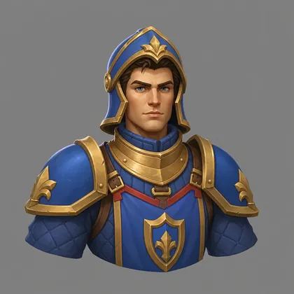
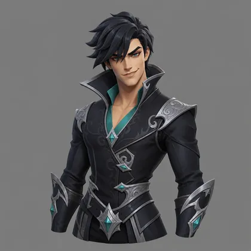
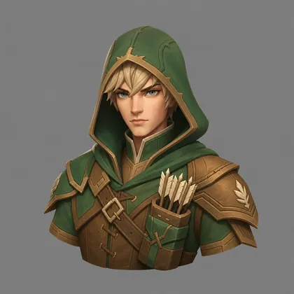
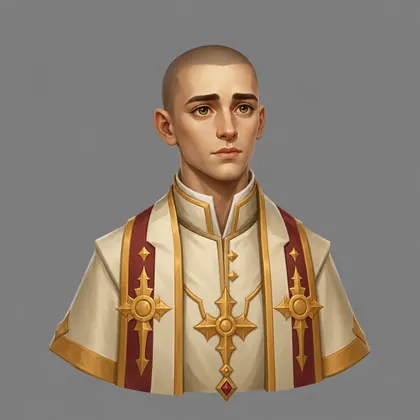
Ironroot Raiz-de-Ferro
Mão, fogo e raiz: o cristal é colheita e matéria. Lenta, pesada, orgulhosa do que faz com as mãos. Cidade inicial: Pedrabrota.
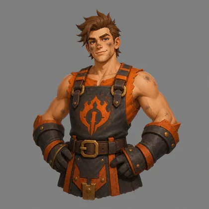
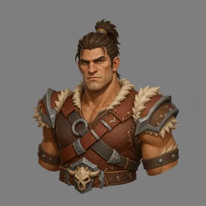
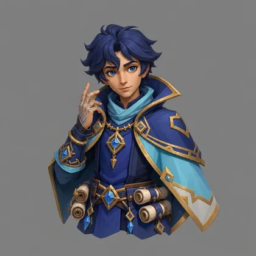
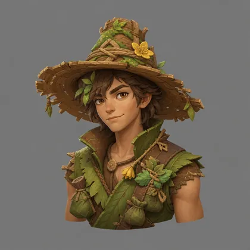
Gravemarch A Marcha das Covas
Disciplina de exército: lembrar os mortos e não largar a fila. Tática e incomum. Cidade inicial: Campavela.
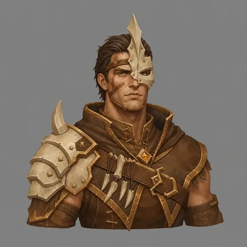
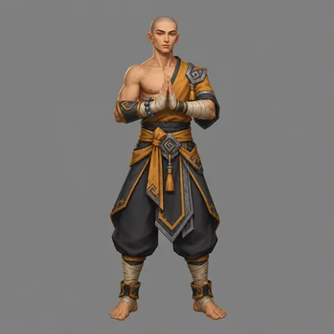
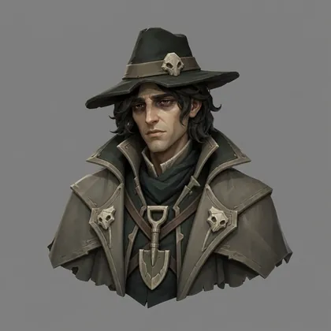
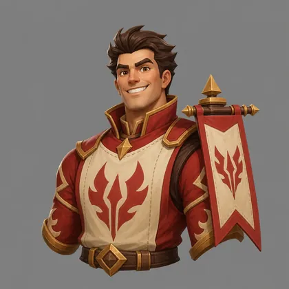